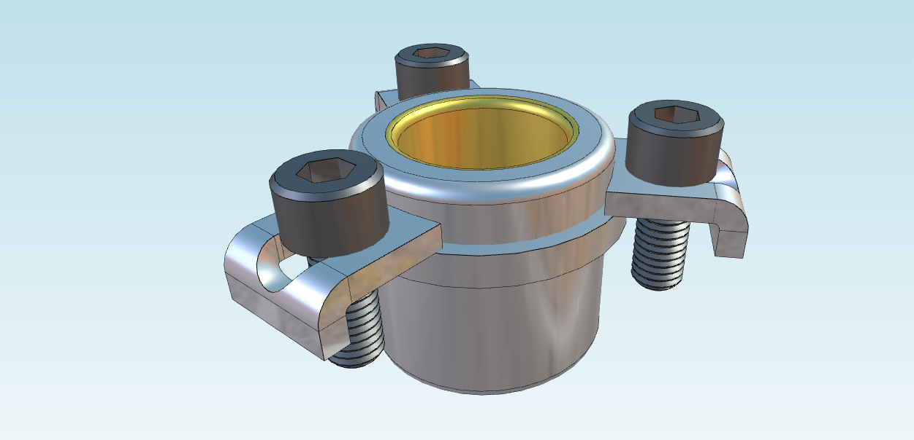

In the example below, we'll import a 3DXML file into a SceneModel
and a DataModel. The SDKError class
is used to handle errors that may occur during the process:
import { Scene } from"@xeokit/scene"; import { Data } from"@xeokit/data"; import { load3DXML } from"@xeokit/threedxml";


xeokit 3DXML Importer
Import 3D CAD models from 3DXML format
The xeokit SDK allows us to import CAD models from 3DXML, a proprietary 3D file format developed by Dassault Systemes.
To import a 3DXML model into xeokit, simply use the load3DXML function, which will load the file into both a SceneModel and a DataModel.
Installation
Usage
In the example below, we'll import a 3DXML file into a SceneModel and a DataModel. The SDKError class is used to handle errors that may occur during the process: